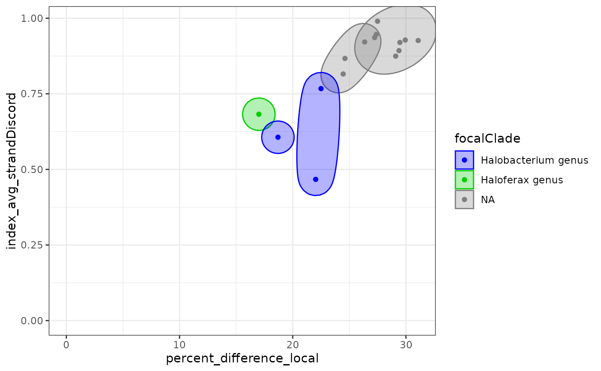

Plot alignments statistics for pairs of genome, draw ellipses on plots with the same most recent common ancestor, color points and ellipses by focal clade.
Arguments
- df
A data frame produced by
MRCAs.- dim1, dim2
the name of the pairwise statistics to summarise.
- xlim, ylim
Minimal and maximal X and Y values.
See also
Other Plotting functions:
MRCA_2D_plot(),
visualizeTree()
Examples
ellipsePlot(Halo_DF |> averageResults())
